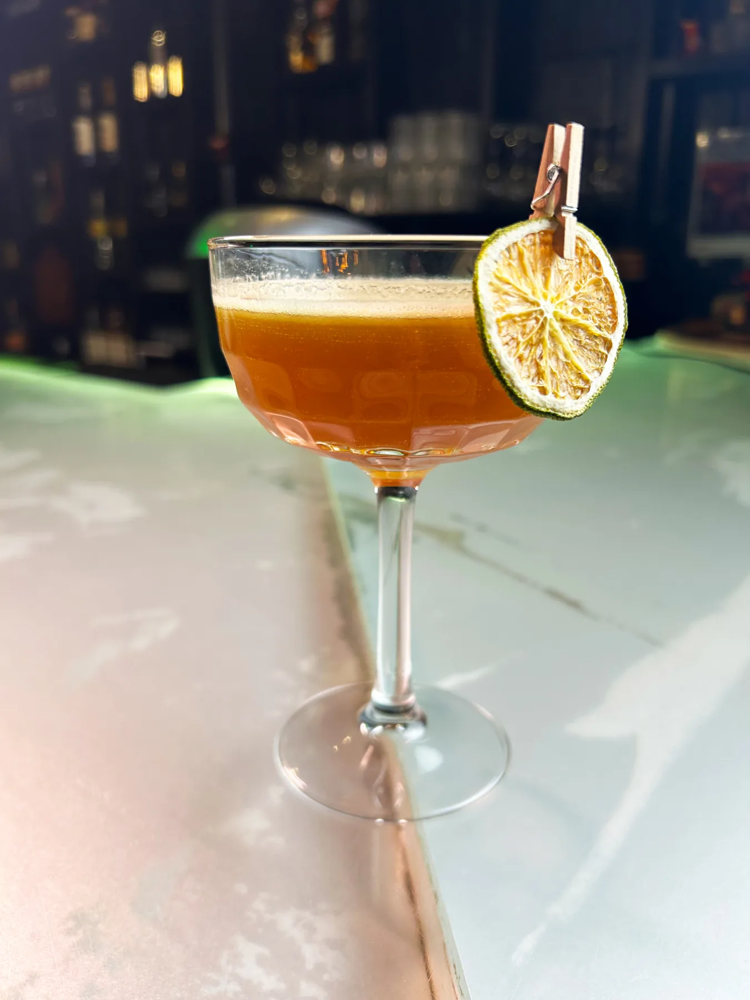
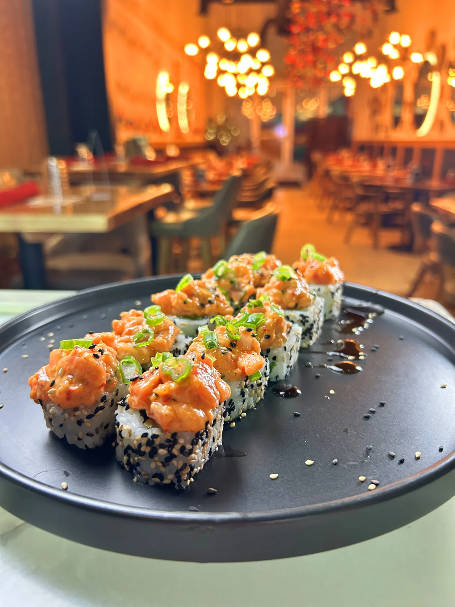

Discover SumaQ
We celebrate the authentic and diverse flavors of Peruvian gastronomy.

The perfect sweet ending to your Peruvian journey.

Signature cocktails inspired by the vibrant spirit of Peru.